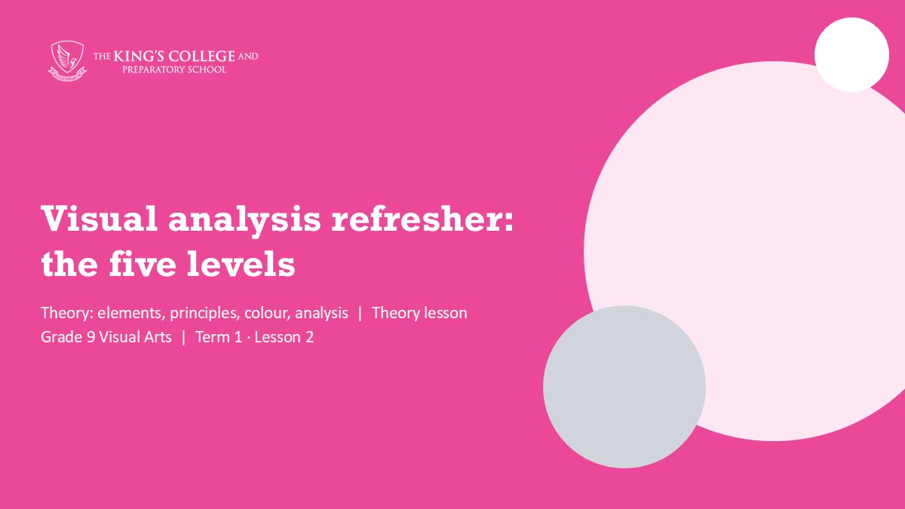

Term 1 · Lesson 2 · Theory and practical lesson
Principles of Design: Contrast, Proportion, Variety (And All Nine)
Start Here
Today I Will
- Explain contrast, proportion and variety and show each in a graphite box
- Name all nine principles of design
- Find all nine principles in one artwork
Look around this room. Where is the strongest contrast you can see?
Words to Know
| Word | Meaning |
|---|---|
| Contrast | Placing strongly different things next to each other, such as light and dark, rough and smooth, or large and small, to create interest. |
| Proportion | The size of parts compared to each other and to the whole, for example the size of the head compared to the body. |
| Variety | Using different lines, shapes, values or textures to add interest and avoid boredom. |
| Unity | The sense that all the parts of an artwork belong together and make a complete whole. |
| Emphasis | Making one part of an artwork stand out so the viewer looks there first. |
| Principles of design | The ways artists arrange the elements of art in an artwork. |
Slides

Videos
Notes
The three principles the 2026 Grade 8s did not reach: contrast, proportion and variety; then a recap of pattern, rhythm, emphasis, unity, movement and balance so that new learners have all nine.
The Three New Principles
- Contrast: Strong differences side by side: light against dark, rough against smooth, big against small. Contrast grabs attention.
- Proportion: How big each part is compared to the others. Correct proportion looks real; changed proportion can look funny, powerful or strange.
- Variety: Different lines, shapes, values and textures in one artwork. Too little is boring; too much feels messy, so unity holds it together.
The Other Six, Quickly
- Pattern: A line, shape or motif repeated in a regular, planned way.
- Rhythm: A visual beat made by repeating elements with regular or changing gaps.
- Emphasis: One part stands out so the eye goes there first: the focal point.
- Unity: All the parts belong together and the artwork feels complete.
- Movement: The path the eye travels around the artwork, or a feeling of action.
- Balance: Visual weight spread evenly (symmetrical) or unevenly but stable (asymmetrical).
Contrast makes it pop, proportion makes it fit, variety keeps it interesting.
Practical
You need: Visual journal, HB, 2B, 4B and 6B pencils, eraser, Las Meninas on screen
Three Principle Boxes and a Nine-Principle Hunt
- Rule three 7 cm boxes in a row across the top of your page.
- Contrast box: a smooth white pebble on a dark, cross-hatched ground. Push the darks with 6B.
- Proportion box: split it in two. Draw a mug with a spoon in proportion, then the same mug with a spoon far too big.
- Variety box: a row of leaves on one stem, each with a different shape, size, line or texture.
- Under each box, write the principle and a one-line definition in your own words.
- Hunt: find all nine principles in Las Meninas and write where each one is.
- Write the due date for the Term 1 Assessment in your diary: Week 4, Friday.
Supports the Term 1 Assessment ('The Principles of Design', issued in Lesson 1, due Friday of Week 4).
Test Yourself
- What is variety, and why does an artwork also need unity?
- Which principle is about the size of parts compared to each other?
- Name all nine principles of design.
Show answers
1. Using different lines, shapes, values or textures to add interest; unity stops the variety from looking messy. 2. Proportion. 3. Pattern, rhythm, emphasis, unity, movement, balance, contrast, proportion and variety.
Finished Early?
Change one principle in a drawing and see what happens to the whole picture.
- Draw two 6 cm boxes side by side in your visual journal.
- In the first box, draw three cups that are all the same size, shape and value.
- In the second, draw the same three cups with variety: change the size, the pattern and the value of each.
- Under the boxes, write one sentence on which box is more interesting and why, using the words 'variety' and 'unity'.